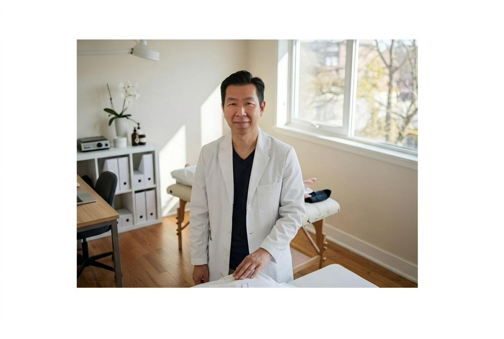
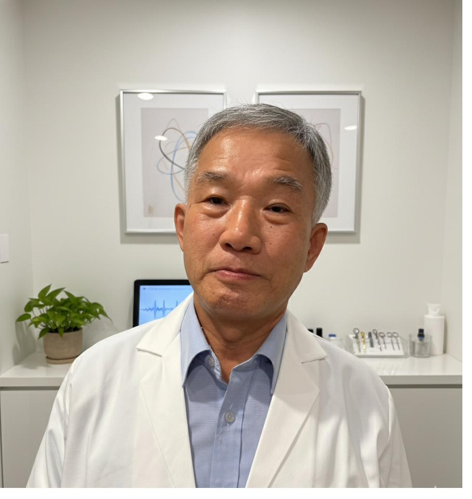
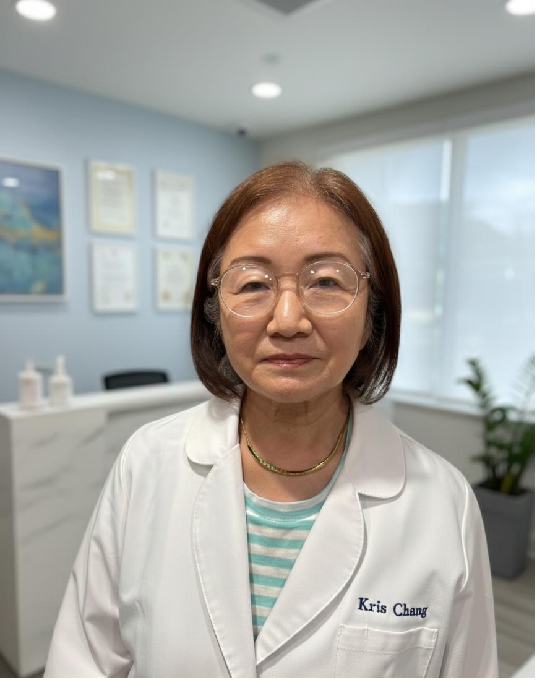

About the Practice
Where Classical Medicine
Meets Modern Rigor
CALee Acupuncture brings together decades of clinical experience, classical Korean medical theory, and published academic research.
The Philosophy
Three principles guide every treatment
Your Constitution Is the Starting Point
Constitutional Individuation. No two patients receive the same treatment for the same diagnosis. Your constitutional type — assessed through Sasang and Eight Constitution Medicine — determines the strategy, not the disease label.
Relational Process. Pain, sleep, digestion, and stress are not separate complaints requiring separate specialists. They are expressions of one relational pattern, and we treat that pattern as a whole.
The Non-Fixed Self. Your body's state is not fixed, and neither is our diagnosis. Treatment adapts as your pattern evolves over the course of care.
Hoon Lee, L.Ac., DAOM(c)
Licensed Acupuncturist · Researcher · Author

Practitioner-Led, Evidence-Informed
Hoon Lee is a California-licensed acupuncturist and doctoral candidate (DAOM) whose clinical work is grounded in a diagnostic framework he has developed and published for peer review.
- SSRN working paper: A Conceptual Framework for Diagnostic Reasoning in Korean Acupuncture (2026)
- Author, Korean Medicine: Theoretical Foundations, Diagnostic Reasoning, and Clinical Practice — 19 chapters on history, Sasang, and Eight Constitution Medicine
- Author, Classical Medicine and Modern Disease — 11 geriatric conditions read through two medical traditions
- Clinical focus: sciatica, peripheral neuropathy, chronic pain, and geriatric conditions
His full research profile, publications, and evidence map are available at the CALee Research Center.
Research Profile ↗Meet Our Team
Licensed practitioners

Young T. Kim
- Seoul National University
- South Baylo University
- Licensed Acupuncturist (L.Ac.)

Kyung H. Chang
- South Baylo University
- Licensed Acupuncturist (L.Ac.)
Go Deeper
Read the framework behind the practice.
SSRN paper, published books, clinical blog, and a 183-question FAQ — all at research.caleeacu.com.